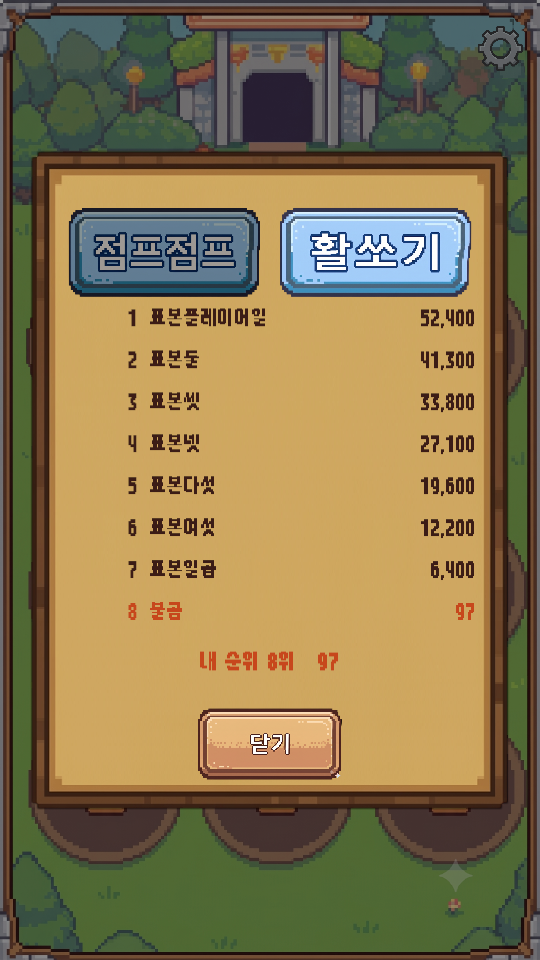
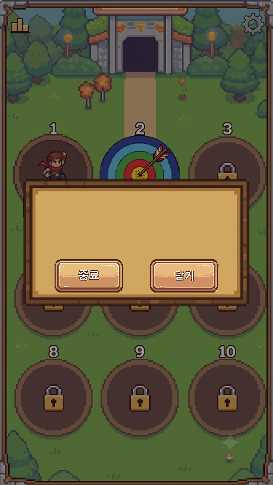
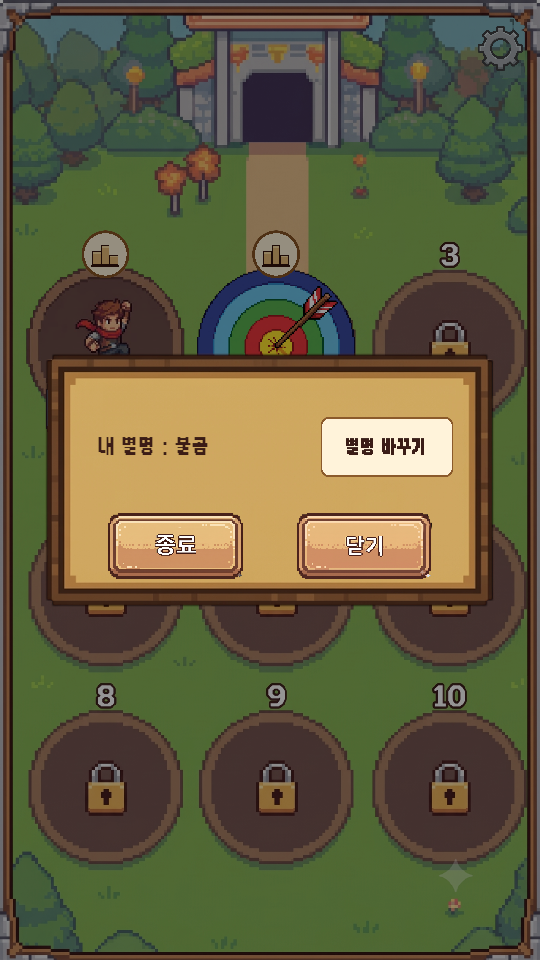
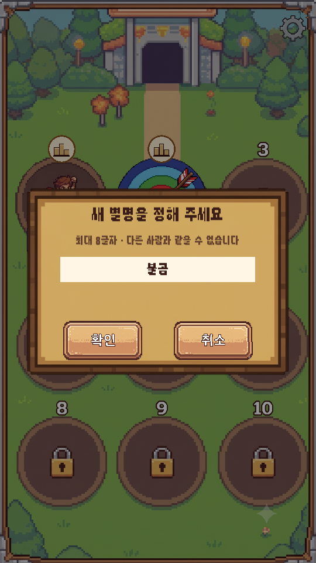
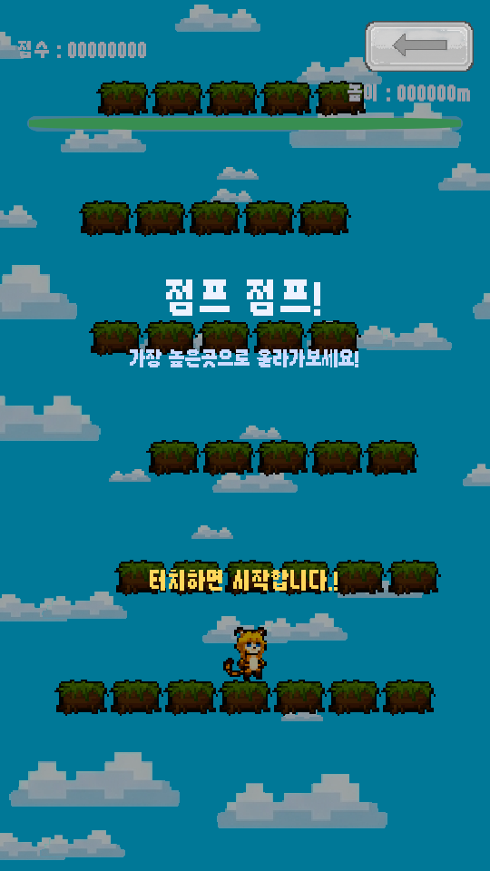
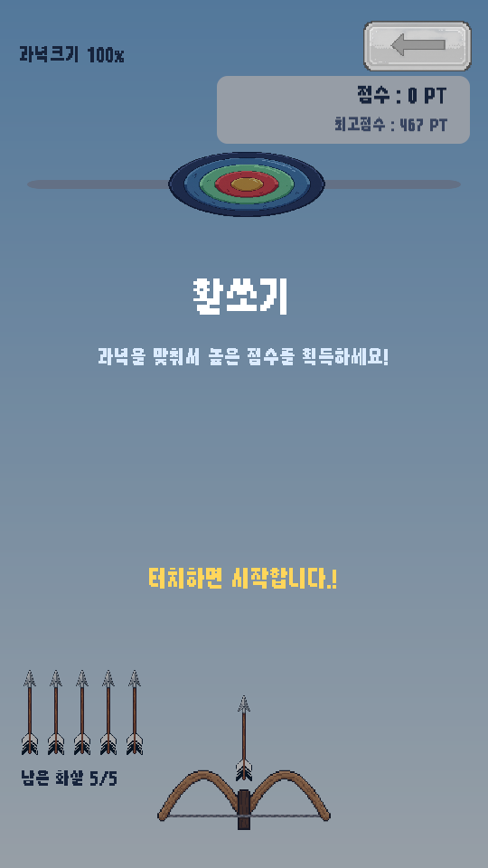
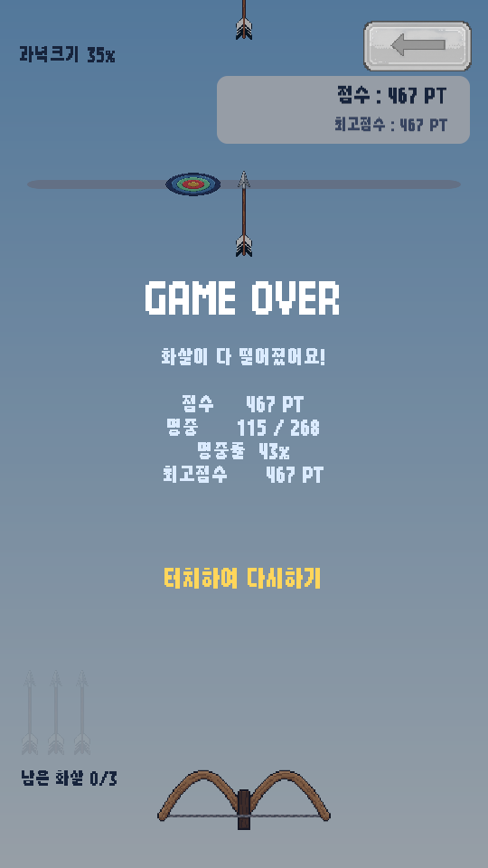
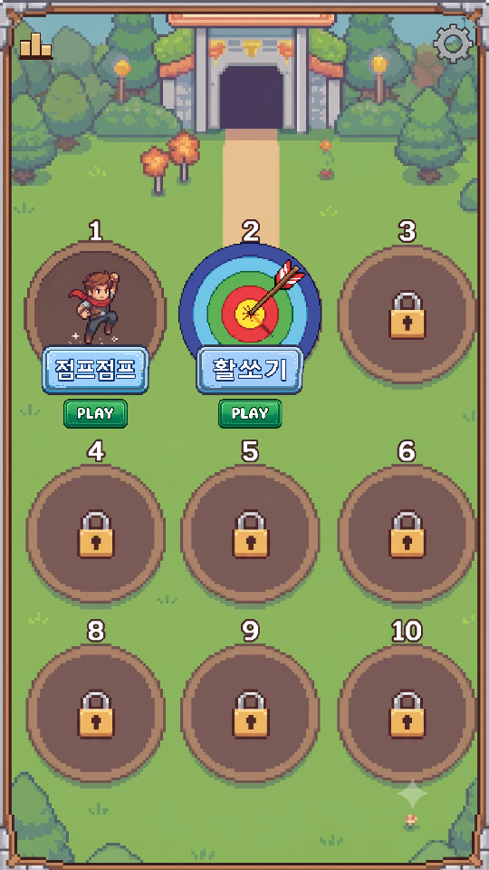

<title>수정사항_02 · 랭킹 서버</title>
<meta charset="utf-8">
<style>
  :root{
    --bg:#f7f6f3; --card:#fff; --ink:#1c1b19; --muted:#6b6862;
    --line:#e3e0da; --accent:#c2410c; --ok:#15803d; --warn:#b45309;
  }
  @media (prefers-color-scheme:dark){:root:not([data-theme="light"]){
    --bg:#16151a; --card:#1f1e24; --ink:#eceaf0; --muted:#a3a0ab;
    --line:#33313b; --accent:#fb923c; --ok:#4ade80; --warn:#fbbf24;
  }}
  :root[data-theme="dark"]{
    --bg:#16151a; --card:#1f1e24; --ink:#eceaf0; --muted:#a3a0ab;
    --line:#33313b; --accent:#fb923c; --ok:#4ade80; --warn:#fbbf24;
  }
  body{background:var(--bg);color:var(--ink);font:16px/1.65 "Malgun Gothic","Segoe UI",system-ui,sans-serif;
       margin:0;padding:40px 20px 80px}
  main{max-width:880px;margin:0 auto}
  h1{font-size:28px;line-height:1.3;margin:0 0 6px;letter-spacing:-.02em}
  .sub{color:var(--muted);margin:0 0 36px;font-size:14px}
  h2{font-size:19px;margin:44px 0 14px;padding-bottom:8px;border-bottom:2px solid var(--line)}
  h3{font-size:15px;margin:26px 0 8px;color:var(--accent)}
  section{background:var(--card);border:1px solid var(--line);border-radius:12px;padding:4px 24px 24px;margin-bottom:8px}
  .tw{overflow-x:auto;margin:14px 0}
  table{border-collapse:collapse;width:100%;font-size:14px;min-width:460px}
  th,td{padding:7px 10px;text-align:left;border-bottom:1px solid var(--line);vertical-align:top}
  th{font-weight:600;color:var(--muted);font-size:12.5px;text-transform:uppercase;letter-spacing:.04em}
  tr:last-child td{border-bottom:none}
  code{background:var(--bg);border:1px solid var(--line);border-radius:4px;padding:1px 5px;font-size:13px;
       font-family:Consolas,"Cascadia Mono",monospace}
  ul{padding-left:20px} li{margin:6px 0}
  ol{padding-left:22px} ol li{margin:8px 0}
  .tag{display:inline-block;font-size:12px;padding:2px 9px;border-radius:99px;border:1px solid currentColor;
       font-weight:600;vertical-align:middle;white-space:nowrap}
  .ok{color:var(--ok)} .warn{color:var(--warn)} .bad{color:var(--accent)}
  .note{border-left:3px solid var(--warn);background:var(--bg);padding:12px 16px;border-radius:0 8px 8px 0;margin:16px 0}
  .note p{margin:6px 0}
  .lead{font-size:17px}
  figure{margin:0}
  .shots{display:flex;gap:14px;flex-wrap:wrap;margin:18px 0}
  .shots figure{flex:1 1 220px;max-width:270px}
  .shots img{width:100%;display:block;border:1px solid var(--line);border-radius:8px}
  .shots figcaption{font-size:12.5px;color:var(--muted);margin-top:8px;text-align:center;line-height:1.5}
  .flow{background:var(--bg);border:1px solid var(--line);border-radius:8px;padding:14px 16px;margin:16px 0;
        font-family:Consolas,"Cascadia Mono",monospace;font-size:13px;line-height:1.9;overflow-x:auto;white-space:pre}
</style>

<main>
<h1>수정사항_02 반영 · 랭킹 서버 연결</h1>
<p class="sub">심심할 때 하는 게임 &middot; 2026-09-11 &middot; <code>수정사항_02.pdf</code> 5건 + 랭킹·광고 2단계(Firebase) &middot; 배치 모드 + 실제 서버 검증 완료</p>

<section>
<h2>한 줄 요약</h2>
<p class="lead"><strong>수정사항 5건을 전부 반영했고, 랭킹이 진짜 서버(Firebase)에 올라갑니다.</strong>
실제 서버로 시험 계정 두 개를 돌려서 로그인 · 별명 · 점수 · 랭킹 · <strong>보안 규칙</strong>까지 확인했고,
시험이 끝난 뒤 시험 계정과 기록은 전부 지웠습니다.</p>

<div class="tw"><table>
<tr><th>#</th><th>요청</th><th>결과</th></tr>
<tr><td>1</td><td>랭킹에서 이름표 두 개를 눌러도 게임이 안 바뀜</td><td><span class="tag ok">고침</span> 탭 번호가 전부 0 으로 구워지던 버그</td></tr>
<tr><td>2</td><td>별명을 바꿀 수 있게 (추천 설정대로)</td><td><span class="tag ok">추가</span> 설정 창에 [별명 바꾸기] · 횟수 제한 없음</td></tr>
<tr><td>3</td><td><code>badword.csv</code> 데이터 추가</td><td><span class="tag ok">적용</span> 금지어 17,730개로 별명 거르기</td></tr>
<tr><td>4</td><td>HUD 변경 완료</td><td><span class="tag ok">확인</span> 화면에서 넘치는 곳 없음 · 원본 파일 맞춤</td></tr>
<tr><td>5</td><td>랭킹 버튼을 게임마다</td><td><span class="tag ok">옮김</span> 로비 왼쪽 위 → 각 게임 칸의 번호 자리</td></tr>
<tr><td>+</td><td>랭킹 서버 (할 일 목록 1번)</td><td><span class="tag ok">연결</span> 익명 로그인 + Firestore · 보안 규칙 게시 완료</td></tr>
</table></div>
</section>

<section>
<h2>1. 랭킹 탭이 안 바뀌던 버그</h2>
<p><strong>원인은 씬을 굽는 코드의 작은 실수였습니다.</strong> 탭 두 개에는 각각 "나는 0번 탭", "나는 1번 탭" 이라는
번호를 적어 두어야 하는데, 번호를 적는 함수가 <strong>숫자 칸에 값을 넣는 방법을 잘못 써서</strong>
두 탭 모두 0번으로 저장되어 있었습니다. 그래서 어느 이름표를 눌러도 "0번(점프점프)을 보여 줘" 가 되었습니다.</p>
<p>그 함수는 원래 "배경을 어떻게 맞출지" 같은 <em>선택지</em> 값을 넣는 용도로 만든 것이라, 선택지에는 잘 들어가고
보통 숫자에는 조용히 안 들어갔습니다. <strong>이제 값의 종류를 보고 알맞은 방법으로 넣습니다.</strong></p>
<div class="note"><p><strong>다시 생기지 않게 막아 두었습니다.</strong> 자체 점검이 매번 구워진 로비를 열어
"탭 번호가 0, 1 로 저장됐는가", "탭을 누르면 게임이 바뀌는가" 를 확인합니다 → <code>[0, 1]</code> 통과.
배치 모드는 원래 "눌리는지" 를 못 보는데, 이번 것은 저장된 번호를 직접 읽어서 잡을 수 있었습니다.</p></div>
<div class="shots">
<figure>
  <figcaption>두 번째 탭(활쏘기)이 골라진 랭킹 창<br>줄은 에디터 표본 + 에디터에서 하신 기록</figcaption></figure>
</div>
</section>

<section>
<h2>2. 별명 바꾸기</h2>
<p>추천드린 대로 <strong>설정 창에 한 줄</strong> 넣었습니다 — "내 별명 : ○○" 과 <strong>[별명 바꾸기]</strong>.
누르면 설정 창 위에 별명 창이 뜨고, 바꾸고 나면 설정 창의 별명이 곧바로 바뀝니다. <strong>횟수 제한은 없습니다.</strong></p>
<ul>
<li>바꿀 때 <strong>쓰던 별명은 놓아 줍니다</strong> — 새 별명을 잡는 것과 쓰던 별명을 놓는 것이 서버에서 <strong>한 번에</strong> 일어납니다.
    그래서 한 사람이 별명을 여러 개 쥐고 있을 수 없습니다.</li>
<li>이미 올라가 있는 <strong>점수 줄의 별명도 새 별명으로 바뀝니다</strong> (서버 점검으로 확인).</li>
<li>영문은 대소문자를 가리지 않습니다 — <code>Tom</code> 이 있으면 <code>tom</code> 도 못 씁니다.</li>
<li>[별명 바꾸기] 버튼은 그림이 아니라 <strong>빈 이름표 그림 위에 글자</strong>를 얹은 것입니다 (문구는 <code>strings.csv</code>).
    버튼 그림을 그려 주시면 바꿔 끼우겠습니다.</li>
</ul>
<div class="shots">
<figure>
  <figcaption>전 &mdash; [종료] [닫기] 뿐</figcaption></figure>
<figure>
  <figcaption>후 &mdash; "내 별명" + [별명 바꾸기]<br>위쪽은 사운드 자리로 여전히 비워 둠</figcaption></figure>
<figure>
  <figcaption>[별명 바꾸기] 를 누르면</figcaption></figure>
</div>
</section>

<section>
<h2>3. 금지어 <code>badword.csv</code></h2>
<p>주신 표를 그대로 씁니다 (18,411줄 &rarr; 겹치는 줄을 빼면 <strong>17,730개</strong>).
작업 폴더의 <code>badword.csv</code> 가 원본이고, <code>strings.csv</code> 처럼 <strong>고치고 Build All Scenes 를 누르면</strong> 반영됩니다.</p>
<p><strong>거르는 방법</strong> — 별명과 금지어를 둘 다 소문자로 바꾸고 공백·기호를 뺀 다음,
<strong>금지어가 별명 안 어디에든 들어 있으면</strong> 막습니다. 그래서 <code>시 발</code>, <code>시.발</code>, <code>SiBaL</code> 도 걸립니다.
화면에는 "쓸 수 없는 말이 들어 있습니다" 만 보이고, 어느 말에 걸렸는지는 보여 주지 않습니다 (목록을 알려 주는 셈이라서).</p>

<h3>짧은 금지어가 멀쩡한 별명을 막습니다</h3>
<p>흔한 별명 50여 개를 넣어 보았습니다. 사람 이름 · 동물 · 직업 같은 것은 전부 통과했고, <strong>아래는 막혔습니다.</strong></p>
<div class="tw"><table>
<tr><th>넣어 본 별명</th><th>걸린 금지어</th><th>생각</th></tr>
<tr><td><code>SMILE</code></td><td><code>SM</code></td><td>영문 두 글자는 넓게 걸립니다</td></tr>
<tr><td><code>짬뽕</code></td><td><code>뽕</code></td><td rowspan="2">한 글자짜리 금지어가 30개 있습니다</td></tr>
<tr><td><code>똥강아지</code></td><td><code>똥</code></td></tr>
<tr><td><code>고추장</code></td><td><code>고추</code></td><td rowspan="3">두 글자짜리가 4,105개 — 대부분은 욕이 맞지만 이런 것도 섞여 있습니다</td></tr>
<tr><td><code>구멍가게</code></td><td><code>구멍</code></td></tr>
<tr><td><code>동거동락</code></td><td><code>동거</code></td></tr>
</table></div>
<p>남들에게 보이는 이름이라 <strong>넓게 막는 쪽이 심사에는 안전합니다.</strong>
풀어 주고 싶은 줄이 있으면 표에서 지우시면 됩니다. 영문 <code>ARS</code>(STARS), <code>ORAL</code>(MORAL), <code>HIDDEN</code>,
<code>MARKETING</code> 같은 줄도 들어 있어서 한 번 훑어보시길 권합니다.</p>
</section>

<section>
<h2>4. HUD 한글</h2>
<p>바꾸신 문구로 두 게임을 캡처해 보았습니다. <strong>넘치거나 잘리는 곳은 없습니다.</strong>
활쏘기 시작 설명을 한 줄로 줄이셔서 오히려 여유가 생겼습니다.</p>
<div class="shots">
<figure>
  <figcaption>점프점프 시작 화면</figcaption></figure>
<figure>
  <figcaption>활쏘기 시작 화면</figcaption></figure>
<figure>
  <figcaption>활쏘기 종료 화면</figcaption></figure>
</div>
<div class="note">
<p><strong>하나 맞춰 둔 것.</strong> 바꾸신 곳이 작업 폴더의 <code>strings.csv</code> 가 아니라
<strong>프로젝트 안의 사본</strong>(<code>Assets/Shell/Resources/strings.csv</code>)이었습니다. 그대로 두면 나중에 작업 폴더 쪽을 고치는 순간
바꾸신 한글이 옛 영어로 덮어써집니다. 그래서 <strong>안쪽 것을 작업 폴더로 복사해 둘을 똑같이 맞췄습니다.</strong>
앞으로는 작업 폴더의 <code>strings.csv</code> 를 고쳐 주시면 됩니다.</p>
</div>
<p><strong>보시고 정하실 것 (고치지 않았습니다)</strong></p>
<ul>
<li>"터치하면 시작합니다<strong>.!</strong>" — 점과 느낌표가 같이 있습니다. 의도하신 것인지 모르겠습니다.</li>
<li>활쏘기 종료 화면의 숫자 줄이 <strong>가운데 정렬</strong>이라 줄마다 들쭉날쭉합니다 (영어일 때도 같았습니다).</li>
<li><code>GAME OVER</code> · <code>TIME OVER</code> · <code>COMBO</code> 세 줄은 영어로 남아 있습니다. 일부러 두신 거라면 그대로 좋습니다.</li>
</ul>
</section>

<section>
<h2>5. 랭킹 버튼을 게임마다</h2>
<p>그려 주신 대로 <strong>각 게임 칸의 번호 자리</strong>에 랭킹 아이콘을 얹었습니다. 누르면
<strong>그 게임의 탭이 골라진 채로</strong> 랭킹 창이 열립니다. 로비 왼쪽 위 아이콘은 없앴습니다.</p>
<p>처음에는 아이콘만 얹었더니 배경에 그려진 <strong>"2" 가 아이콘 뒤로 삐져나와</strong> 보였습니다
(그려 주신 그림에는 아이콘 둘레에 잔디가 같이 붙어 있어서 번호가 가려져 있었습니다).
그래서 <strong>동그란 받침</strong>을 깔아 번호를 가렸습니다. 게임이 10번 칸까지 늘어도 두 자리 숫자까지 가려지는 크기입니다.</p>
<div class="shots">
<figure>
  <figcaption>전 &mdash; 왼쪽 위 아이콘 하나</figcaption></figure>
<figure>
  <figcaption>후 &mdash; 게임 칸마다<br>게임 칸을 누르면 게임, 아이콘을 누르면 랭킹</figcaption></figure>
</div>
<p>아이콘은 여전히 <strong>임시 그림</strong>(시상대)입니다. 그려 주시면 작업 폴더에 <code>Rank.png</code> 로,
받침까지 바꾸시려면 <code>Rank_Badge.png</code> 로 넣으시면 됩니다. 자리·크기는 로비 인스펙터(<code>LobbyScreen</code>)의 숫자로 조정합니다.</p>
</section>

<section>
<h2>+ 랭킹 서버 연결 (2단계)</h2>
<p class="lead">이제 <strong>한 판이 끝나면 점수가 Firebase 에 올라가고, 랭킹 창은 서버에서 순위를 가져옵니다.</strong></p>

<div class="flow">앱을 켠다   -> 익명 로그인 (사용자는 아무것도 안 함, 고유 번호를 받음)
한 판 끝    -> 폰에 먼저 기록 -> 별명이 없으면 [별명 창] -> 서버에 올림
랭킹 창     -> 서버에서 상위 8명 + 내 순위
인터넷 끊김 -> 기록은 폰에 남음 -> 다음에 연결되면 (앱 켤 때 · 다음 판 · 랭킹 창) 올라감</div>

<h3>계획서와 달라진 점 — Firebase SDK 를 넣지 않았습니다</h3>
<p>계획서에는 "Firebase SDK 를 임포트" 라고 적었는데, <strong>SDK 없이 Firebase 의 웹 주소로 직접 붙였습니다.</strong>
Unity 에 원래 들어 있는 통신 기능만 씁니다. 하는 일(익명 로그인 + Firestore)은 똑같습니다.</p>
<ul>
<li><strong>APK 가 커지지 않습니다.</strong> SDK 는 안드로이드용 라이브러리를 여럿 끌고 들어옵니다.</li>
<li><strong>빌드가 깨질 걱정이 없습니다.</strong> 계획서에서 "SDK 를 넣으면 빌드가 한 번은 깨질 가능성이 높다" 고 했던 부분이 통째로 사라졌습니다.</li>
<li><strong>제가 직접 서버까지 시험할 수 있습니다.</strong> 게임과 똑같은 코드를 배치 모드에서 돌려 실제 서버에 붙여 볼 수 있어서, 아래 점검이 가능했습니다.</li>
</ul>

<h3>보안 규칙</h3>
<p>게시해 주신 <code>firestore.rules</code> 의 내용입니다. <strong>읽기는 누구나, 쓰기는 자기 자리만.</strong></p>
<ul>
<li>남의 점수를 고치거나 지울 수 없습니다.</li>
<li>내 점수를 예전보다 <strong>낮게</strong> 덮어쓸 수 없습니다.</li>
<li>남이 쓰는 별명을 빼앗거나, <strong>남의 별명으로</strong> 점수를 올릴 수 없습니다.</li>
</ul>
<div class="note"><p>처음 붙여 넣으셨을 때 난 <code>Line 1: Parse error</code> 는 <strong>규칙 파일에 넣은 한글 설명(주석)</strong> 때문이었습니다.
설명을 영문으로 바꾼 파일로 다시 게시하셨고, 규칙 내용은 같습니다. 앞으로 규칙 파일은 영문으로만 쓰겠습니다.</p></div>

<h3>실제 서버 점검 — 19건 전부 통과</h3>
<p>시험 계정 A · B 를 익명으로 만들어, 시험용 칸(<code>ranks/selftest</code>)에만 썼습니다.
<strong>끝난 뒤 시험 기록과 시험 계정을 전부 지웠습니다.</strong> 두 번 돌렸고 두 번 다 통과했습니다.</p>
<div class="tw"><table>
<tr><th>무엇을</th><th>결과</th></tr>
<tr><td>A 익명 로그인 → 별명 잡기 → 점수 1234 올리기 → 랭킹에서 1234 로 보이기</td><td><span class="tag ok">통과</span></td></tr>
<tr><td>더 낮은 점수(1000)는 기록을 안 바꿈</td><td><span class="tag ok">통과</span></td></tr>
<tr><td>A 별명 바꾸기 → 쓰던 별명이 풀리고, 점수 줄의 별명도 새 것으로</td><td><span class="tag ok">통과</span></td></tr>
<tr><td>B 가 A 의 별명을 대소문자만 바꿔 잡으려 하면 "이미 있는 별명"</td><td><span class="tag ok">통과</span></td></tr>
<tr><td>B 는 A 가 놓은 별명을 잡을 수 있음</td><td><span class="tag ok">통과</span></td></tr>
<tr><td>[보안] B 가 A 의 점수 줄을 고치기 → 서버가 거절 (<code>PERMISSION_DENIED</code>)</td><td><span class="tag ok">통과</span></td></tr>
<tr><td>[보안] B 가 A 의 별명으로 점수 올리기 → 서버가 거절</td><td><span class="tag ok">통과</span></td></tr>
<tr><td>[보안] B 가 A 의 별명 자리 지우기 → 서버가 거절</td><td><span class="tag ok">통과</span></td></tr>
<tr><td>시험 기록 · 시험 계정 삭제 (A, B)</td><td><span class="tag ok">통과</span></td></tr>
</table></div>

<h3>알아 두실 것</h3>
<ul>
<li><strong>에디터에서 Play 해도 진짜 서버에 올라갑니다.</strong> 시험하신 기록이 실제 랭킹에 남으니,
    출시 직전에 지우면 됩니다 (할 일 목록 4번에 넣었습니다).</li>
<li>에디터에 1단계 때 정해 두신 별명 <code>불곰</code> 은 폰 안에만 있던 것입니다. <strong>다음 판이 끝날 때 서버에 자동으로 등록</strong>됩니다.
    만약 그 사이 누가 같은 별명을 잡았다면 "이미 있는 별명입니다" 가 뜬 채로 별명 창이 다시 열립니다.</li>
<li><strong>앱을 지웠다 다시 깔면 새 사람이 됩니다.</strong> 익명 로그인의 성질입니다. 쓰던 별명과 점수는 서버에 남지만 되찾을 수 없습니다.
    (나중에 구글 로그인을 붙이면 이어지게 할 수 있습니다)</li>
<li>무료 한도 — Firestore 는 하루 읽기 5만 번까지 무료입니다. 랭킹 창 한 번에 10번 안팎이라 <strong>하루 5천 번 정도 열어도 무료</strong>입니다.
    같은 게임을 20초 안에 다시 열면 서버에 다시 묻지 않게 해 두었습니다.</li>
<li>서버가 점수가 "진짜인지" 까지 검사하지는 않습니다. 앱을 뜯어고친 사람은 큰 점수를 올릴 수 있습니다 (규칙상 상한 1억).
    개인 게임에서 흔한 타협이고, 문제가 되면 그때 막는 방법을 찾겠습니다.</li>
</ul>
</section>

<section>
<h2>검증</h2>
<div class="tw"><table>
<tr><th>무엇</th><th>결과</th></tr>
<tr><td>컴파일 + 씬 4장 굽기 (Build All)</td><td><span class="tag ok">오류 0</span></td></tr>
<tr><td>자체 점검 (서버 없이) — 12건 → <strong>34건</strong>으로 늘림</td><td><span class="tag ok">전부 통과</span> 탭 번호 · 게임 칸 아이콘 · 금지어 · 별명 · 서버 답 읽기 추가</td></tr>
<tr><td>서버 점검 (실제 Firebase) 19건</td><td><span class="tag ok">전부 통과</span> 2회</td></tr>
<tr><td>점프점프 플레이테스트</td><td><span class="tag ok">정상</span> 봇 95 · 103 · 117칸 (판마다 다릅니다 · 게임 코드는 그대로)</td></tr>
<tr><td>활쏘기 플레이테스트</td><td><span class="tag ok">정상</span> 조준 봇 96발 명중 / 빗맞히는 봇 7판 전부 화살 소진</td></tr>
<tr><td>화면 캡처 (타이틀 · 로비 · 팝업 · 두 게임)</td><td><span class="tag ok">확인</span> 새로 <code>00_popup_ranking_tab2</code> · <code>00_popup_nickname_change</code></td></tr>
</table></div>
<div class="note"><p><strong>"눌리는지" 는 배치 모드로 확인할 수 없습니다.</strong> 에디터에서 Play 로 한 번 눌러 봐 주세요 —
방법은 <code>할일_목록.html</code> 의 "0. 바로 지금" 에 적었습니다.</p></div>
</section>

<section>
<h2>되돌리고 싶으시면</h2>
<p>이번 작업은 커밋 두 개로 남겼습니다 — <strong>"수정사항_02 + 랭킹 서버 연결"</strong>(코드·데이터)과
<strong>"문서"</strong>. 예를 들어 "랭킹 버튼을 다시 왼쪽 위로" 같은 요청은 말씀만 주시면 그 부분만 되돌리겠습니다.</p>
</section>
</main>
